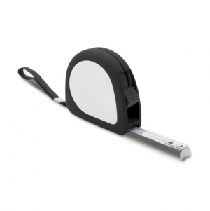
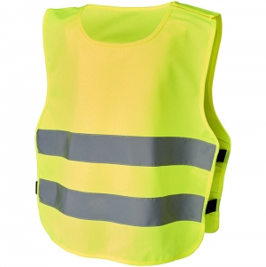

Tipos e variantes
Acessórios para automóvel e bicicleta
Suportes, organizadores, bolsas e pequenos acessórios devem ser avaliados no ponto de instalação. Um encaixe que funciona num local pode interferir com comandos ou com a utilização noutro.
Aspetos que distinguem as opções: Fixação, dimensões, acesso e possibilidade de remover sem dificultar a utilização.
Contexto possível: Arrumação e apoio à deslocação no equipamento compatível.
Lanternas
Uma luz de mão, uma luz de apoio e uma luz para montar num veículo não têm necessariamente a mesma finalidade. Observe como se aciona o interruptor e como se troca ou recarrega a alimentação.
Aspetos que distinguem as opções: Formato do feixe, apoio, alimentação e instruções de uso.
Contexto possível: Iluminação de proximidade e tarefas previstas para o artigo.
Ferramentas pequenas e multifunções
Uma ferramenta individual privilegia uma operação; um conjunto dobrável reúne peças que se abrem de formas diferentes. Conte as funções úteis para a tarefa e observe o acesso a cada peça, sem assumir aptidão profissional.
Aspetos que distinguem as opções: Pega, abertura, bloqueios quando existam e instruções para cada operação.
Contexto possível: Pequenas tarefas compatíveis com o objeto e com as competências de quem o utiliza.
Fitas métricas
Observe a escala, a extremidade de apoio, a forma de recolher e o acesso ao travão se existir. Uma graduação impressa não demonstra precisão ou aptidão para uma medição regulamentada.
Aspetos que distinguem as opções: Legibilidade, unidades, comprimento útil e recolha controlada.
Contexto possível: Medições adequadas à documentação do instrumento.
Artigos refletores e de proteção
Distinga um acessório com uma zona refletora de um equipamento destinado a proteger de um risco. Óculos ou coletes fotografados não permitem identificar nível de proteção ou conformidade. ↗
Aspetos que distinguem as opções: Finalidade, instruções, tamanho e documentação aplicável ao artigo.
Contexto possível: Utilizações expressamente previstas na documentação, sem extrapolar pela aparência.
Usos e contextos
- Defina uma tarefa e o local de utilização antes de escolher o número de funções.
- Se o objeto tiver uma função de proteção, separe essa avaliação da escolha da mensagem ou da embalagem.
O que comparar
- Experimente abrir e fechar cada peça com controlo. O número de funções não explica a facilidade de utilização.
- Numa lanterna, verifique se os comandos podem ser usados na posição prevista e como se acede à alimentação.
- Para proteção, procure finalidade e documentação aplicáveis. O enquadramento europeu de EPI é específico para produtos destinados a proteger de riscos. ↗

Materiais e componentes
São possibilidades a identificar no artigo escolhido. Confirme a composição de cada parte; os materiais de uma variante não descrevem toda a família.
Peças de trabalho, lâminas e articulações
metais
Identifique cada peça e respetivo uso; uma carcaça metálica não descreve todas as ferramentas.
Pegas, invólucros e apoios
plásticos
Observe textura, encaixes e espaço disponível para agarrar.
Bolsas e painéis vestíveis
materiais têxteis
Não deduza a composição ou função de faixas pela cor e brilho.
Zonas de personalização
- Invólucro ou pega livre: Mantenha legíveis escalas, instruções e informação técnica; não cubra zonas de preensão necessárias.
- Bolsa de transporte: Pode receber a mensagem sem intervir no mecanismo, desde que o processo seja adequado ao material.
Técnicas e condições
Possibilidades gerais para comparar. A aplicação depende do artigo, da superfície, do desenho e das condições do processo; não está confirmada para um artigo específico.
Gravação a laser
Avalie revestimento e zona de aplicação sem atingir arestas de trabalho, mecanismos ou informação técnica.
Tampografia
Avalie aderência e curvatura do invólucro, evitando botões e apoios.
Transfers
Em peças vestíveis, confirme se a intervenção é permitida e onde pode ser feita; não cubra zonas funcionais ou refletoras.
Limitações e cuidados
- Não atribua homologação, precisão, resistência à água ou isolamento elétrico pelo nome do ficheiro ou aspeto.
- Um acessório luminoso ou refletor não deve ser apresentado como substituto de equipamento exigido para uma utilização específica.
- Respeite as instruções de lâminas, articulações e alimentação; guarde as peças na posição indicada.
- Observe danos e funcionamento antes de utilizar. Não use a personalização para ocultar marcações de segurança.

Antes de decidir
- Qual é a tarefa?
- Como se abre e fixa?
- Que função e limites estão documentados?
Perguntas frequentes
Mais funções tornam uma ferramenta mais adequada?
Não necessariamente. Acesso, pega e utilidade de cada peça para a tarefa são critérios mais úteis.
Uma faixa brilhante demonstra proteção certificada?
Não. A imagem não permite avaliar documentação, finalidade nem desempenho.
Pode personalizar-se um equipamento de proteção?
É necessário confirmar se o procedimento e a zona são permitidos para esse equipamento e preservam as suas funções.
Fontes e âmbito
As referências sustentam os factos identificados no texto. Os tipos, contextos e critérios de escolha são orientação editorial; as instruções de um fabricante aplicam-se ao seu próprio âmbito.
-
Equipamento de proteção individual
Comissão Europeia · Consulta:Distingue equipamento destinado a proteger de riscos e o seu enquadramento. Não certifica os produtos ou fotografias desta biblioteca.